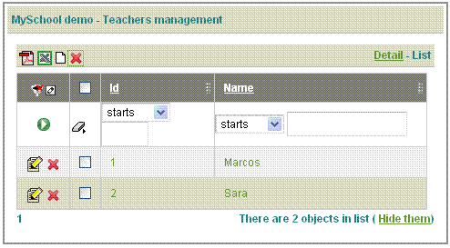
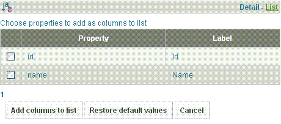
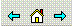
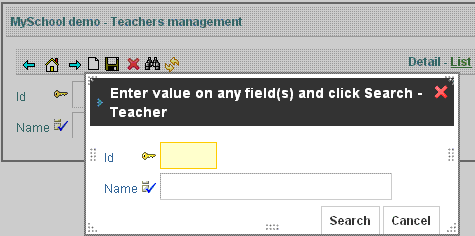

Справка
Режим Таблица

Данный режим предназначен для отображения списка записей и выполнения индивидуальных и групповых операций над ними.
В данном режиме пользователю доступны следующие возможности:
- Фильтрация записей по любому столбцу или комбинации стобцов: Для включения фильтрации просто выберите режим сравнения, введите или выберите искомые значения, затем примените фильтр, кликнув по значку
 .
.

- Запуск очетов: кликнув на значки
 или
или  , вы получите отчет (в формате PDF или Excel, соответственно). В отчет будут включены записи из текущего представления, удовлетворяющие примененному фильтру.
, вы получите отчет (в формате PDF или Excel, соответственно). В отчет будут включены записи из текущего представления, удовлетворяющие примененному фильтру. - Сортировка (упорядочивание) по любому из стоблцов: просто кликнете по имени столбца.

При первом клике будет выполнена сортировка в альфавитном порядке, при втором клике записи отображатся в порядке, обратном алфавитному. - Создание записи: чтобы добавить записи, кликнете на значок
 . Откроется форма для ввода данных новой записи.
. Откроется форма для ввода данных новой записи. - Измнение записи: you can edit when: clicking on any part of the row, clicking on icon
 or clicking on detail link
or clicking on detail link 
- Удаление записи: clicking on icon
 . You can delete several records or only one record:
. You can delete several records or only one record:

- Настройка списка и порядка столбцов: clicking on icon , you can add, remove or move columns:

> With the icons
 and
and  , you can move the columns; with
, you can move the columns; with  you remove a column from the list; and
you remove a column from the list; and- clicking on
 display a list whit all the columns:
display a list whit all the columns: - 
- you selected the columns to add, after you click on 'Add columns to list'.
Режим Форма

Данный режим предназначен для отображения всех данных записи,а также их редактирования.
В данном режиме пользователю доступны следующие возможности:
- Навигация между записями: используя значки , можете перейти в предыдущей записи (значок "Влево"), к первой записи (значок "Домик") или к следующей записи.
- Сохранение новой записи: first clicking on icon to go a new record, after you fill the form and then you click on icon
 .
. - Удаление записи: clicking on you can delete the display record.
- Поиск записи: clicking on icon
 , it show a dialog to put the information to search:
, it show a dialog to put the information to search:
 - Обновление экрана: refresh the information in the screen.
Режим Both
Данный режим отображает оба представления и "Форма", и "Таблица".